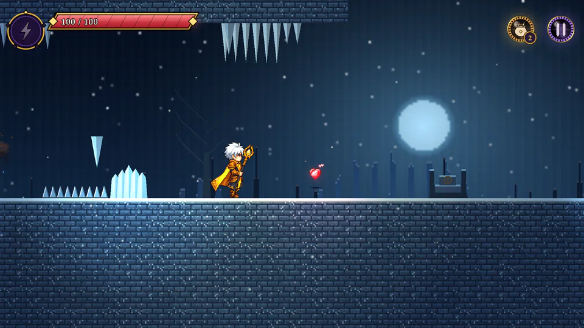
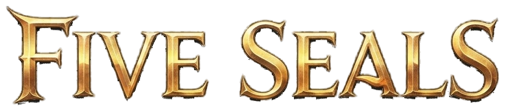
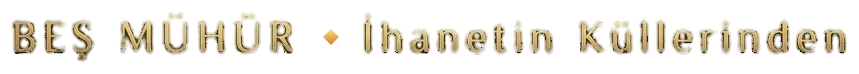
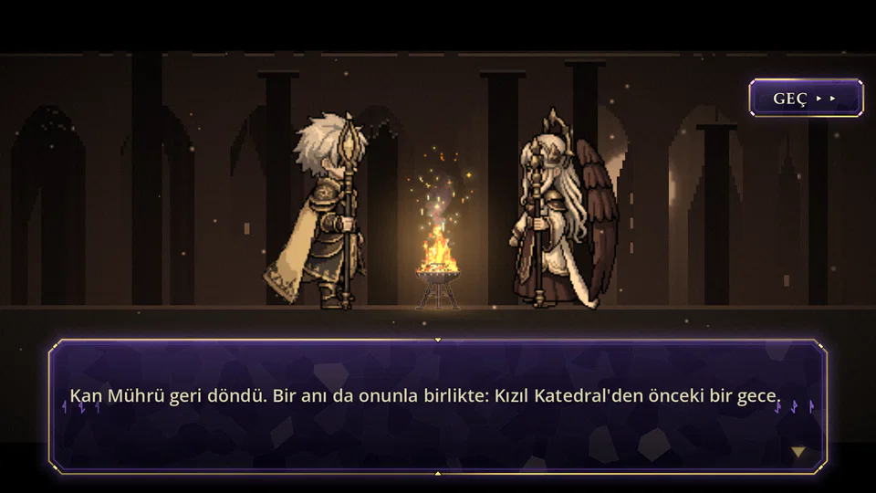
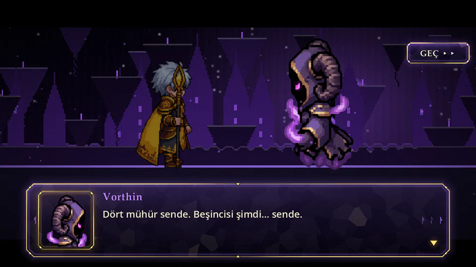
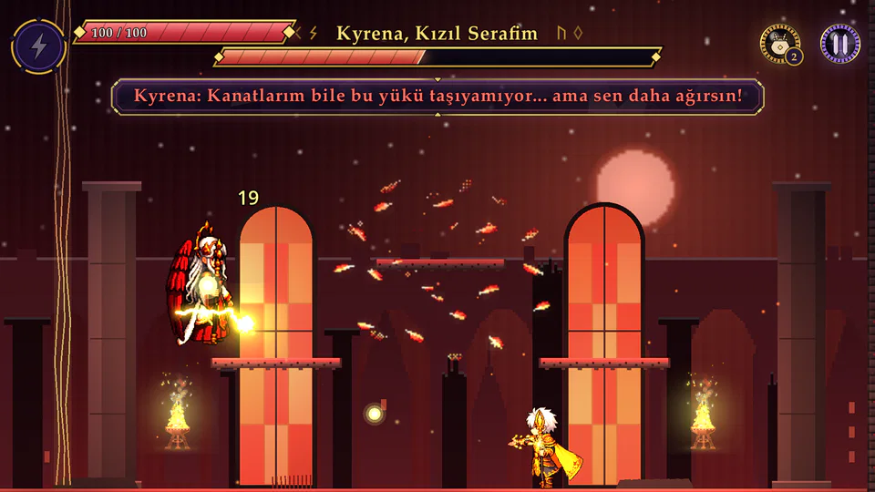
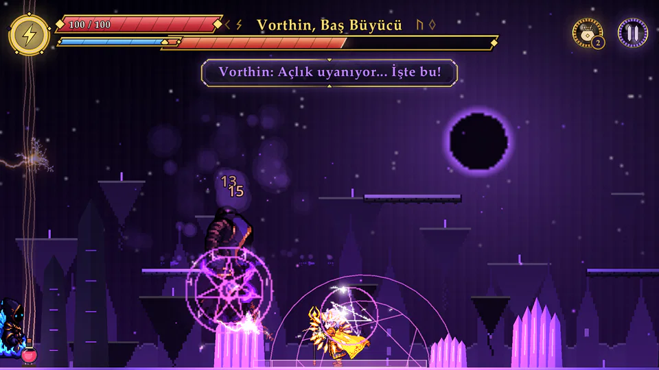
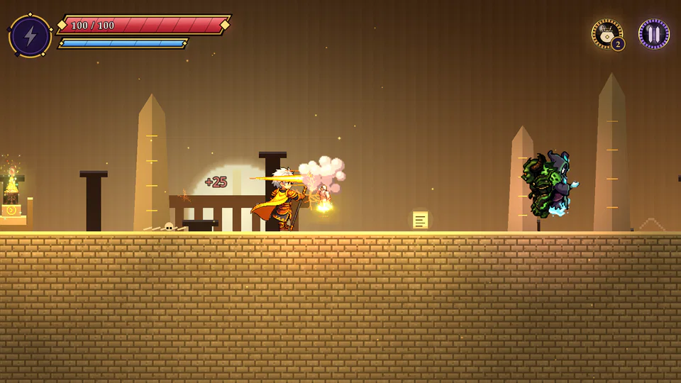
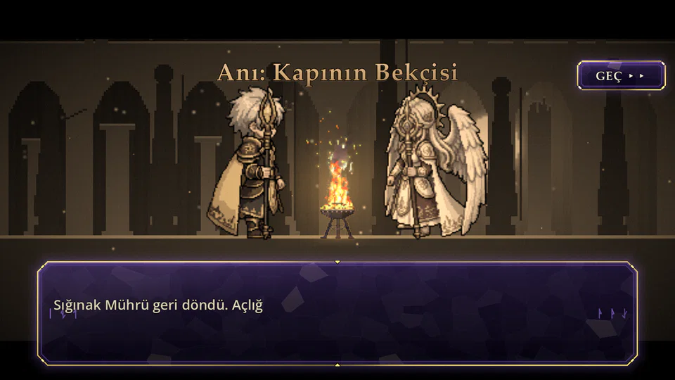
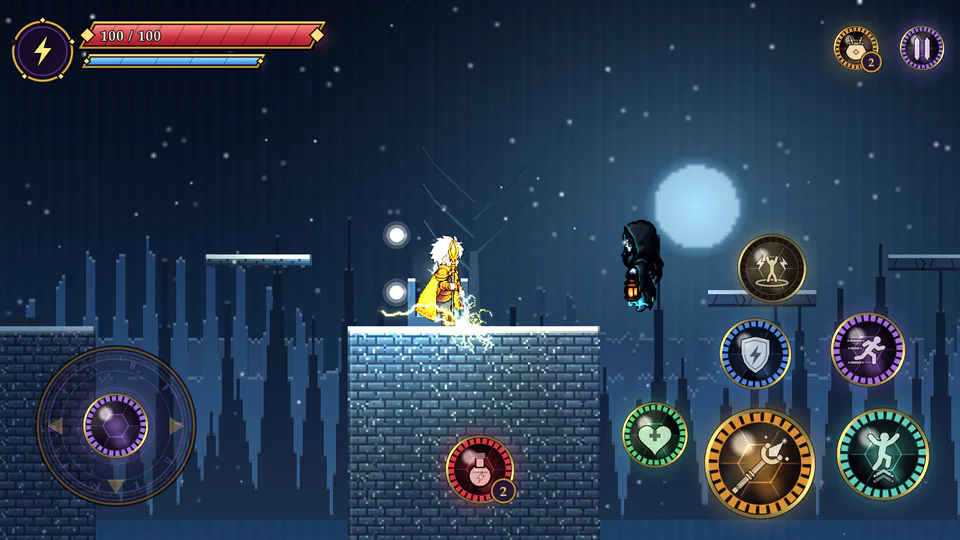

Milimetrik platform hissi
Koyote süresi, zıplama tamponu, apeks asılı kalma, köşe düzeltme ve dash-zıplama. Düştüğünde suç hep senin, asla kontrollerin değil.



Beş büyücü ihanet etti. Dokuz yıl sonra, bir mezar odasının soğuk taşında yıldırım yeniden uyandı.


Her bölgenin kendi teması, düşmanları, tuzakları, gizli alanları ve boss arenası var. Mührü geri al, gücünü kazan, gerçeği hatırla.
Kyrena'nın Mezarlığı

Yıldırım Akademisi'nin son muhafızı. Kılıcı yok; tek silahı asası ve içinde uğuldayan fırtına. Her yenilen boss, ona bir mühür ve yeni bir güç geri verir.
Kıvılcım, kıvılcım, delen yüklü küre: üçlü ritimle uzaktan şimşek.
Hasar almadan ileri fırla; havada da, zıplamanın ortasında da.
Kan Mührü ile havada ikinci bir sıçrayış.
Doğru anda kaldır, mermileri geri yansıt.
Manayı yaraları kapatan bir devreye dönüştür.
Beş mührün sesini tek bir yıkıcı nihai saldırıda birleştir.
Sıkı platform hissi, çok fazlı boss dövüşleri ve keşfedilmeyi bekleyen sırlar. Hepsi dokunmatik ekran için baştan tasarlandı.

Koyote süresi, zıplama tamponu, apeks asılı kalma, köşe düzeltme ve dash-zıplama. Düştüğünde suç hep senin, asla kontrollerin değil.

Üçlü şimşek ritmi, havada aşağı atışla sekme, mermi yansıtan parry, hit-stop ve ekran sarsıntısı.
Kovalayan, bombacı, nişancı, fırlatan, hücum eden, dev, ışınlanan hayalet ve kalkanlı şövalye.

Tüy yelpazesi, buz lotusu, güneş patlaması, kara delik. Her boss'un kendine özgü saldırı seti var.

Yaşam Kristalleri, haritaya saklanmış iksirler ve büyücülerin sırlarını anlatan 15 arşiv notu.
Oyun içinde anında dil değişimi; tüm hikâye, diyalog ve arayüz çevrildi.

Giriş sineması, boss öncesi yüzleşmeler, her mühürle geri gelen sepya anılar ve seni iki farklı sona götüren bir final seçimi.
Her biri bir mührü taşıyor. Her biri ihaneti için kendince bir gerekçeye inanıyor.
Hepsi oyun motorunda, oyunun kendisinden alındı. Büyütmek için bir kareye dokun.

Yüzen runik joystick ve yelpaze düzenindeki küreler. Parmağını kaldırmadan saldırıdan zıplamaya, zıplamadan atılmaya kay.
Beş mühür elinde. Açlık kalbinde. Dünyanın kaderi tek bir kararda.
Açlığı içinde tut, onun efendisi ol: sonsuza dek güçlü... ve yalnız.
Beş mührü kır. Açlıkla birlikte yok ol. Dünya bir daha asla yutulmayacak.
Five Seals, Android telefon ve tabletler için geliyor. Beş bölge, beş boss ve iki son seni bekliyor.
Android 7.0 ve üzeri · Telefon ve tablet · Gamepad desteği · Kişisel veri toplamaz